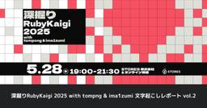

STORES Product Blog
https://product.st.inc/
こだわりを持ったお商売を支える「STORES」のテクノロジー部門のメンバーによるブログです。
フィード
Euruko 2025 発表してきました
STORES Product Blog
技術推進本部の shia です。最近東京は天気が荒れやすく、湿っぽい夏になっている印象ですが、ひと足先に秋を感じてきましたのでその話をしようと思います。 先日 09/18-19 にポルトガルの Viana do Castelo で開催された Euruko 2025 に参加してきました。あちらは昼でも 25度くらいで、 半袖だとやや肌寒い感じでいい天気でとても過ごしやすかったというか半袖しか持っていってないのでやや寒い生活をしていました。それはさておき、自分が発表した話や面白かったセッションなどをレポートします。 Euruko 2025 EuRuKo は、ヨーロッパで行われる代表的な Ruby …
2日前

深掘りRubyKaigi 2025 with tompng & ima1zumi 文字起こしレポート vol.2
STORES Product Blog
2025年5月28日に『深堀りRubyKaigi 2025 with tompng & ima1zumi』を開催しました。イベントの内容をほぼ全文文字起こし形式でお届けします。この記事は後編です。 hey.connpass.com プログラミングの最初は金融系のシステム 開発環境とエディタ Rubyistから見たCOBOL 文字コードの問題 文字は常にバイト列だし、バイト列しか信用できない Unicode実装への取り組み 質疑応答 BigDecimalについて 深堀りRubyKaigi 2025 文字起こしレポート一覧 プログラミングの最初は金融系のシステム fujimura: では第2部とい…
3日前
深掘りRubyKaigi 2025 with tompng & ima1zumi 文字起こしレポート vol.1
STORES Product Blog
2025年5月28日に『深堀りRubyKaigi 2025 with tompng & ima1zumi』を開催しました。深堀りRubyKaigiはRubyKaigi 2022からはじめており、今回で4回目です。 イベントの内容をほぼ全文文字起こし形式でお届けします。この記事は前編です。 hey.connpass.com 登場人物 Excelで円周率の100桁を計算 Rubyとの出会い Quineとの出会い IRBの開発について オープンソースと仕事の違い Relineのリアーキテクチャ 今後の展望 AIとの連携 BigDecimal 深堀りRubyKaigi 2025 文字起こしレポート一覧…
3日前
STORES はKaigi on Rails 2025に協賛してSTORES CAFE for Womenを開催し、2名が登壇します
STORES Product Blog
STORES は、9月26日（金）・27日（土）に開催されるKaigi on Rails 2025に協賛し、Anti-bocchi lunch sponsorとして、女性向けランチ会STORES CAFE for Womenを両日とも開催します。また、2名が登壇します！ 登壇情報 登壇者から意気込みをもらいました！ Sidekiq その前に：Webアプリケーションにおける非同期ジョブ設計原則 日時：2025/09/26（土）11:05 ~ 11:35 場所：Hall Red 歴史ある STORES を開発していて何度も苦しめられた非同期ジョブについて話します。 初学者の方からWebアプリケーシ…
3日前

DroidKaigi 2025 参加レポート
STORES Product Blog
こんにちは！DroidKaigi 2025 の興奮冷めやらず、いまもセッション動画を見返している @error96num です。 まずは、DroidKaigi おつかれさまでした！ 今年は STORES から20名のメンバーが現地参加し、ブース出展・登壇・スタッフ活動など、盛りだくさんの3日間を過ごしました。 この記事では、STORES で取り組んだことや、印象に残ったセッションについてみんなの感想をまとめていきたいと思います。 DroidKaigi 2025 について DroidKaigi はエンジニアが主役のカンファレンスで、Android 技術情報の共有とコミュニケーションを目的としてい…
8日前
STORES Tech Conf 2025 “What Would You Do?” を2025年11月26日（水）に開催＆学生向け参加支援をします
STORES Product Blog
こんにちは、技術広報のえんじぇるです。 2024年に引き続き STORES Tech Conf を今年も開催することになりました！わいわい！ 開催日時：2025年11月26日（水）13:00〜19:00、懇親会19:00〜21:00 開催場所：浅草橋ヒューリックホール&カンファレンス 参加費用：無料 今年のテーマは“What Would You Do?”です。サイトもオープンしておりますので、ぜひご覧ください。 storesinc.tech 絶賛準備中ですが、STORES Tech Conf 2025について紹介します。 前回の開催について STORES Tech Conf 2024“New …
17日前
Ruby言語そのものの開発に挑戦する特別なインターンシップ、「Ruby開発インターンシップ」を始めます
STORES Product Blog
こんにちは、STORES で VPoE をしている id:hogelog です。 本日はプログラミングそのものが好きな学生の皆さんに向けて、特別なインターンシップの募集をお知らせします。Railsプロダクトを一緒に開発するのでもなく、講義的なワークショップをやるのでもなく、Ruby言語をRubyコミッターと一緒に開発する「Ruby開発インターンシップ」です。 hrmos.co なぜ「Ruby開発インターンシップ」の開発なのか？ 私たち STORES は「Just for Fun」をミッションに、まちのお店のデジタル化を支援する会社として多くのプロダクトを作ってきました。EC、POSレジ、予約シ…
17日前
インタラクティブなコマンドラインも自動化できるって知ってた？
STORES Product Blog
こんにちは、tomorrowkeyです。 普段はAndroidアプリを書いていますが、100% Androidアプリ開発というわけでもないので、今回の記事ではAndroidではない話題を書いてみようかなと思います。 開発の現場ではたくさんのワークフローを実行しないといけない場面があり、それらをいつまでも放っておくとやらないといけないことが積み上がってしまい、本質的な開発に集中できません。 そういった単純な繰り返し実行を行うようであれば自動化をしたくなるのがソフトウェアエンジニアではないかと思います。単純にコマンドラインであればシェルスクリプトを書くことで自動化のワークフローを組むことができます…
24日前
STORES では新卒エンジニア内定直結型 2days インターンを行います
STORES Product Blog
STORES でエンジニアのシニアマネージャーをやっている @_morihirok です。 タイトルの通り、STORES ではソフトウェアエンジニアを志望する27卒の学生を対象に、内定直結型 2days インターンを行います。 この記事では実施の背景とインターンの内容についてお話できればと思います。 実施の背景 私たち STORES は「Just for Fun」をミッションに、まちのお店のデジタル化を支援する会社です。 特定の課題に特化したソフトウェアを作っているのではなく、「お店のデジタル化」を支援すべくさまざまな切り口でソフトウェアを作っています。EC、POSレジ、予約システム、モバイル…
24日前
Android Bluetooth接続でパスキー確認ダイアログが表示されない問題の解決
STORES Product Blog
こどもの夏休みはもう終わってしまいましたが、自由研究の宿題として貯金箱を作りたい、というので一緒になって作りました。こどもの作業を手伝ってしまっては宿題にならないので、私も横で同じものを作って、つまずきポイントを繰り返し見せながらなんとか完成までこぎつけました。久しく厚紙工作をやっていませんでしたが、改めて面白さを実感したDIYでした。 こんにちは。 STORES 決済 でAndroidアプリエンジニアをしている Yamaton です。 今回は、AndroidアプリのBluetooth接続機能で遭遇した問題について書きたいと思います。 特定のデバイスでのみペアリングのパスキーダイアログが表示さ…
1ヶ月前
OSSignposterを活用したiOSアプリのパフォーマンス計測
STORES Product Blog
こんにちは、 STORES レジ を開発しているiOSエンジニアの @miichan_ocha です！ みなさん、iOSアプリのパフォーマンスを計測していますか？ iOSアプリは Xcode Instruments を使ってアプリのさまざまな状態を計測できます。その中でも、パフォーマンス計測のときによく使われるのは Time Profiler ではないでしょうか。Time Profiler は Instruments 上で選択した範囲において、どの関数がどれくらいの時間 CPU を使用していたかを計測してくれる便利なツールです。 Time Profiler CPU使用率の高い関数を特定できても…
1ヶ月前
STORES では GitHub Actions Self-hosted runner を運用しています
STORES Product Blog
STORES 技術推進本部の@White-Greenです。 この記事では、技術推進本部で管理しているGitHub Actions Self-hosted runnerシステムについて紹介します。 GitHub Actions Self-hosted runnerとは STORESでは、多くのプロジェクトのCI/CD環境にGitHub Actionsを利用しています。GitHub Actionsは通常GitHubが管理しているMicrosoft Azure上のマシンで動作するものですが、自分たちで管理している好きなマシン上で動作させることもできます。これをSelf-hosted runnerとい…
1ヶ月前
STORES は iOSDC Japan 2025 に協賛します！
STORES Product Blog
こんにちは、iOS エンジニアの @miichan_ocha です。 今年も iOSDC Japan の季節が近づいてきました！ 今年は 2025年9月19日（金）〜 9月21日（日）に有明セントラルタワーホール＆カンファレンスでの開催ということで、今からとてもワクワクしています！ STORES は今年もゴールドスポンサーとして参加し、ブース・登壇・ランチ会などのイベントで会場を盛り上げていきます！ ということで、この記事では STORES の今年の取り組みをご紹介します！ ノベルティ みなさまのご自宅に届くノベルティボックスに、ストまる (弊社のキャラクター) のしおりを封入しております！ …
1ヶ月前
Cognito×Oktaで社内管理画面向けのIdPを構築！一石二鳥の認証基盤の作り方
STORES Product Blog
STORES 技術推進本部の id:atpons です。 今回は、STORESにおける内部向けの管理画面の認証を統合し、社内外のユーザーを統一的に扱える認証基盤を構築した話を紹介します。従来のOktaとアプリケーションの連携から、Amazon Cognito User PoolとOktaを組み合わせたハイブリッドな認証システムへと移行し、開発者体験とセキュリティの両方を向上させました。
1ヶ月前
Nuxt Ecosystem Team のメンバーになりました
STORES Product Blog
STORES でデザインエンジニアをしている wattanx です。 Nuxt Ecosystem Team のメンバーになってすぐに書こうと思っていましたが、約2年経ってしまいました。 改めてどのような経緯でメンバーになったのかを書いていこうと思います。 Nuxt とは Nuxt は Vue.js を使ったフルスタック Web アプリケーションや Web サイトを構築するためのオープンソースフレームワークです。 nuxt.com 弊社でも Nuxt を使ったプロダクトが複数存在しています。 どういった経緯でメンバーになったのか 2年前 STORES の Nuxt で作られたプロダクトを Nu…
1ヶ月前
STORES は DroidKaigi 2025 に協賛します！
STORES Product Blog
こんにちは。Android エンジニアの naberyo です。 DroidKaigi 2025 は 9月10日(水)〜12日(金)に、ベルサール渋谷ガーデンで行われます。いよいよ開催まで残り1ヶ月を切り、わくわくが止まりません！ STORES は、今年もゴールドスポンサーとして参加します。ブース・登壇・コミュニティ企画で会場を盛り上げていきます！ DroidKaigi 2025 の詳細は公式サイトをご覧ください。 2025.droidkaigi.jp Ebisu.mobile #11（事前イベント） DroidKaigi のちょうど1週間前、9月4日(木) 12:00–12:55 にオンライ…
1ヶ月前
デザインエンジニアリングの領域を強化していきます
STORES Product Blog
STORES のykpythemindです。今回はSTORES 内で強化しているデザインエンジニアリングの領域についてお伝えできたらと思います。 今までのSTORES はどうやってUIを作ってきたか まずは我々のプロダクトと、ここまで歩んできた道のりについて説明します。 STORES は中堅・中小規模の店舗を運営する方々にむけて、ネットショップ開設・POSレジ・キャッシュレス決済・オンライン予約システム・アプリ作成など、お店のデジタル化を総合的に支援するサービスを展開しています。 今回のUIの領域としては、店鋪を運営する方々（事業者様）が日々使う画面にフォーカスしてお話しようと思います。 1 …
1ヶ月前
fastlane match の内部実装を活用して複数の iOS 開発者証明書の期限を一括チェックする方法
STORES Product Blog
STORES ブランドアプリチームで iOS エンジニアをしている榎本 ( @enomotok_ )です。 STORES ブランドアプリは、オーナーさんが自分のお店専用のアプリを作成できるサービスです。そのため私たちのチームでは、各オーナーさんのアプリを日々定期的にアップデート・リリースしています。現在運用しているアプリは数十個にのぼり、それぞれが異なるオーナーさんの App Store Connect の“組織”に紐づいているため、開発者証明書はアプリごとに存在します。 複数の開発者証明書を管理していると、全ての有効期限を管理するのは困難です。今回は、 fastlane match *1 の…
2ヶ月前
2025年上半期 STORES エンジニアの登壇まとめ
STORES Product Blog
こんにちは、技術広報のえんじぇるです。 登壇塾という登壇支援のワーキンググループがあり、エンジニアのみんなが社外で発信することを奨励しています。2025年上期は23のカンファレンス・イベントに32名（ユニーク）が登壇しました。そのうち5名は3回以上登壇していました。驚き。 各登壇の詳細をご紹介します。 1/17-18 東京Ruby会議12 1/24 Findy Team+ エンジニア組織を成功に導く"マネジメント"の重要性「組織の潜在力を最大化する取り組みとは？ 1/30 2025クラウドガバナンスはこう変わる！マルチアカウント運用のre:Invent最新情報と活用例 2/4 Women in…
2ヶ月前
STORES は iOSDC Japan 2025 に参加したい学生さんを支援します
STORES Product Blog
みなさまこんにちは、STORES モバイル開発本部の @huin です。 Google I/O や WWDC25 も終わり、みなさまこれから出てくる新OSのキャッチアップ・対応に追われている日々かと思います。ワクワクしますね！ 今年の WWDC25 は Liquid Glass や Foundation Models Framework の発表など、目玉となるものがとても多いアタリ年だったように思ってます。 がしかし、これを全部 キャッチアップするのは大変。。。。 そんな時にありがたいのが技術コミュニティですよねってことで、最新の技術やディープな知見があつまる iOSDC Japan 2025…
2ヶ月前
Personal Access Tokenを撤廃！セキュアなプライベートパッケージレジストリを自作プロキシで解決した話
STORES Product Blog
こんにちは、STORES 技術推進本部のid:atponsです。普段はSTORESの技術的な課題の解決や改善、パブリッククラウドの運用などを担当しています。 今回は、開発者体験を損なっていたプライベートパッケージレジストリのトークンの運用を見直し、セキュアで簡単な認証の仕組みをリバースプロキシの自作で実現した話を紹介します。
2ヶ月前
RubyのPathnameライブラリが本体組み込みになったらGC周りのテスト失敗がおきた
STORES Product Blog
こんにちは。ruby-devチームの遠藤（@mametter）です。 次期バージョンのRubyでは、pathnameがRuby本体組み込みとなり、require "pathname"なしで利用可能になる予定です。 Rubyで書き捨てスクリプトを書いてる自分のような人は地味にうれしいかもしれません。 Feature #17473: Make Pathname to embedded class of Ruby - Ruby - Ruby Issue Tracking System さて、pathnameの組み込みがマージされた直後、非常に興味深いバグが発生しました。 今回はそのデバッグの経緯を技…
2ヶ月前
「Ruby on Rails の楽しみ方」への高橋会長のレビューコメント
STORES Product Blog
STORES エンジニアの morihirok です。 先日サポーターズさん主催の勉強会「技育CAMPアカデミア」にて、学生の皆様に向けてSTORES社が講義をさせていただきました。 テーマは「『なぜ今 Rails を学ぶべきなのか』Ruby on Rails から学ぶ Web アプリケーション開発実践」ということで Ruby と Ruby on Rails についていろいろな切り口からお話をさせていただきまして、私も「Ruby on Rails の楽しみ方」と題して Ruby on Rails がWebアプリケーション開発の歴史においてどのような意味を持ち、どのように学び、楽しむとよいかとい…
3ヶ月前
関西Ruby会議08 参加レポート
STORES Product Blog
こんにちは、Webエンジニアのima1zumiです。2025年6月28日に開催された関西Ruby会議08に参加しました。この記事では参加レポートと、参加したメンバーからの感想をお届けします。 関西Ruby会議は、関西で定期的に開催されているプログラミング言語Rubyに関する技術カンファレンスです。今年で8回目で、京都府京都市の先斗町歌舞練場という会場で開催されました。風情ある素敵な会場でした！ 会場前にずらりと並べられたスポンサーののぼり 普段は鴨川をどりの会場ですが、今日は関西Ruby会議の会場。 2階には桟敷席もありました 以下は参加したメンバーの感想です。 感想 ima1zumi 印象に…
3ヶ月前
STORES 予約の契約管理をZuoraに移行しました
STORES Product Blog
はじめに こんにちは。 STORES でエンジニアをやっている asibi3Q です。 週末は山に登って下界から離れる生活を送っています。 今回は去年1年を通して、STORES 予約の契約管理をサブスクリプション管理 SaaS である Zuora に移行した話について書きます。 移行の背景 STORES には多くのプロダクトが存在しますが、元々は別々の会社で作られたプロダクトで契約管理方法も異なります。 そのため、 プロダクト毎に請求方法やオペレーションが異なることで、オペレーションコストや開発コストが大きい 請求業務の属人化と手作業の多さによる人的リソースの負担増加 といった運用上の課題が多…
3ヶ月前
新規のRailsアプリケーションにPitchforkを導入しました
STORES Product Blog
こんにちは、エンジニアのima1zumiです。私たちのチームでは、STORES の新規プロダクト開発においてRackアプリケーションサーバとしてPitchforkを選定しました。本記事では、その選定背景、具体的な設定内容や運用上の知見をまとめてご紹介します。 なお、本記事執筆時点ではPitchforkの大きな特徴であるrefork機能は導入していません。 Pitchfork選定の背景と理由 Pitchforkとは Pitchforkは、Shopifyが開発・メンテナンスを行っているRackアプリケーション用のHTTPサーバです。広く利用されているUnicornをベースとしたフォークであり、pr…
3ヶ月前
BigQuery→Slack通知をテンプレート化してみた
STORES Product Blog
こんにちは、データ本部のssxotaです。STORESでデータ基盤の保守開発を担当しています。 今回は、BigQueryから集計したデータをSlackで通知する仕組みをテンプレート化し、通知内容の追加や更新を容易にできるようにしたので紹介します。 これまで、BigQueryからのSlack通知は、Argo Workflowsを利用して実行されていました。ワークフロー内でBigQueryにクエリを発行し、結果を文字列に加工してSlack APIを呼び出すことで、社内の経営指標を日次で通知する仕組みが動いていました。 Slack通知構成図 今回、こちらの記事でも紹介しているスタンダードプランの開始…
3ヶ月前
新卒1年目の振り返り
STORES Product Blog
新卒2年目のエンジニアのmaseです。 1年目が終わり気づけば3ヶ月経ってしまいましたが、新卒1年目でやったことを振り返っていこうと思います！ 私は、内定者アルバイトで入社してから2024年12月まで STORES 予約 のチーム配属で開発を行い、2025年1月からはプロダクト統合に関わるチームで開発を行っています。 1年間を通して本当にいろいろなことを学ぶことができました。その中でも特に印象深いものについて書いていきます！ STORES 予約 : 外部APIの仕様変更に伴う改修 初めてチームで設計からリリースまでしっかり関わることになったプロジェクトでした。 この開発では、リリースに向けて責…
3ヶ月前
Goで作られたシステムをRuby on Railsに移植しています 〜GraphQL編〜
STORES Product Blog
STORES でエンジニアをしている片桐です。 先日、「Goで作られたシステムをRuby on Railsに移植しています」という記事を投稿させていただきました。 product.st.inc product.st.inc ベース部分の実装について別ブログで紹介したいと書かせていただきましたが、今回はその中から「GraphQLの移行基盤としてのGraphQL Stitchingの導入」について紹介させていただきます。 GraphQL Stitching の導入 GraphQL Stitchingの実現には、すでに弊社内で採用実績のある graphql-stitching gemを利用します。 …
3ヶ月前
STORES 決済 と PCI DSS (1) 現状と効率化 - 情報の集約と管理
STORES Product Blog
こんにちは。セキュリティ本部の soh です。 昨年から STORES 決済 の PCI DSS 対応 を、バックエンドエンジニアやコーポレート IT エンジニアとともに担当しています。 私自身、初めて PCI DSS 対応を担当する中でさまざまな知見を得ることができ、また改善点も発見することができました。 本稿では、その中でも、 STORES 決済 の PCI DSS 対応における現状と、管理上の効率化の取り組みについてご紹介します。
3ヶ月前